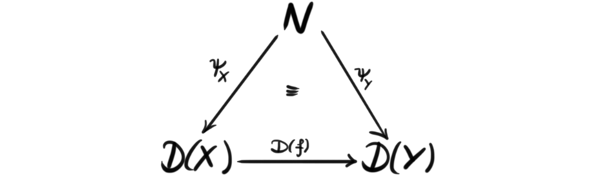
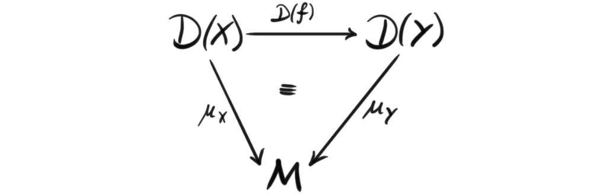
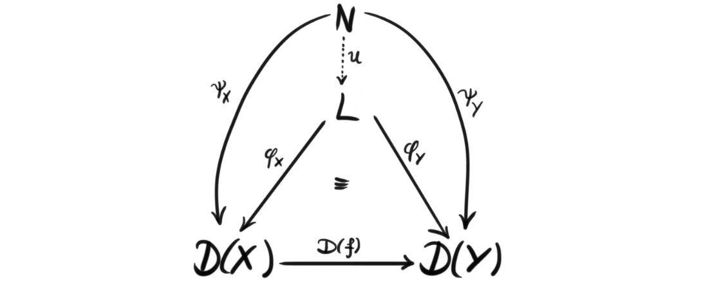
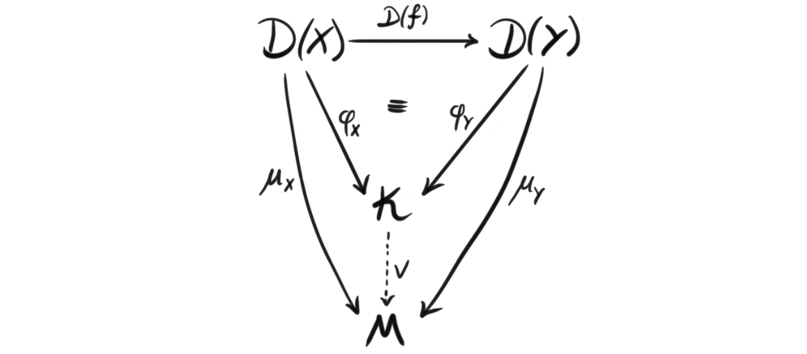

This post is part two of a little two-part miniseries about defining the cosmos. To learn what a cosmos is in mathematics, or rather what we want it to be, you can read the first part. There we described a cosmos as a nice place to enrich a category, or a nice place to do enriched category theory, and to quickly recap, an enriched category is a category where we have objects of morphisms instead of just a collection of them, and these objects come from some monoidal category. In this post we will continue the story, and focus more on the definition rather than the setup.
Ok, since we have already decided we want to do enriched category theory, and a cosmos is supposed to be a nice category to enrich over, we already know at least two properties a cosmos must have.
- It must be a category
- That category must be monoidal
Now we at least have some base line for what a cosmos is! We began the introduction to a cosmos by comparing it to its brother in physics, and maybe it would be fun to continue this path. In physics one wants to be able to study the smallest building blocks, and the largest structures. We would kind of like to be able to “zoom in” and “zoom out” as much as we want, and both see the small local picture and the bigger picture.
The big, and the small
The above analogy is maybe a bit of a stretch, but I think the intuition still kind of holds if we still want to pretend that we are using motivation from physics. In mathematics, and especially in this kind of abstract algebra, looking at the small and looking at the big is called limits and colimits. As said, this analogy is not perfect, as limits and colimits capture much more than just zooming in and out. They kind of capture the structure of seing the smaller and bigger picture, and they do so in every way possible. They are also somewhat difficult to grasp, but we will try our best.
A diagam in a category $\mathcal{C}$ can be thought of as a functor $D$ from a category $J$ to $\mathcal{C}$, where we think of $J$ as a sort of indexing category, or a “shape” category. This means that $J$ determines the indexing, and where we have arrows in our diagram in $\mathcal{C}$. Hence we sometimes reffer to such a diagram to have shape $J$. The diagram is then a collection of objects in $\mathcal{C}$, that are indexed by the objects in $J$, and also has the same “pattern” or “shape” as $J$. If $J$ is a small category, i.e. both the collection of objects form a set, and all the collections of morphisms form sets, then we call $D$ a small diagram.
Definition (Cone and cocone): Let $D$ be a diagram in $\mathcal{C}$ with the shape of $J$. A cone $(N, \psi)$ to $D$ is an object $N$ in $\mathcal{C}$ together with a collection of morphisms $\psi_X : N\longrightarrow D(X)$ indexed by the objects $X$ in $J$, such that for every morphism $f:X\longrightarrow Y$ in $J$, we have $D(f) \circ \psi_X = \psi_Y$, i.e. the diagram

commutes for all such $f$. Dually, a cocone $(M, \mu)$ to $D$ is an object $M$ together with a collection of morphisms $\mu_X : D(X)\longrightarrow M$ indexed by the objects $J$, such that for every morphism $f:X\longrightarrow Y$ in $J$, we have $\mu_Y \circ D(f) = \mu_X$, i.e. the diagram

commutes for all such $f$.
Understanding these cones and cocones is often the difficult part of understanding limits and colimits. There exists weird diagrams, and understanding the cone of one of these weird diagrams as an object itself is in my opinion often difficult. We wont dwelwe too much on these objects, but the reader should look at some examples like products, direct sums, disjoint unions, terminal and initial objects, and check that these are cones or cocones (ther are actually also limits or colimits). This also hints at the fact that limits are cones, and colimits are cocones, which will show up in the definition. They are kind of the biggest cones, and smallest cocones. This will also hopefully become clear from the definition.
Definition (Limit): A limit of a diagram $D$ in a category $\mathcal{C}$ in the shape of $J$ is a universal cone $(L, \phi)$ to $D$. This means that every other cone $(N, \psi)$ uniquely factors through it, i.e. there exists a unique morphism $u: N\longrightarrow L$ such that $\phi_X \circ u = \psi_X$ for all $X$ in $J$. Or in a diagram form:

If the diagram is small, we call the limit a small limit.
Defintion (Colimit): Similarily, a colimit of a diagram $D$ in a category $\mathcal{C}$ in the shape of $J$ is a universal cocone $(L, \phi)$ to $D$. In the same way as for the limit, this means that any other cocone factors uniquely through it. Or in a diagram form:

If the diagram is small we call the colimit a small colimit.
It is important to note that limits and colimits of a diagram need not always exist in a given category, but in the nice ones we usually work in, most likely they exist. A category where all small limits exists is called a complete category, and dually, a category where all small colimits exists is called cocomplete. Some authors call a category bicomplete if the category is both complete and cocomplete. In fact we did this when discussing model categories, which are bicomplete categories with a model structure.
Closed categories
We are actually almost done, but we are missing one final property, and that is a property called closedness. For a category to be closed, we need that everything regarding the category is a part of the category. This is a bit vague, but the simple intuitive definition is that not only the objects in the category are objects, but the collections of morphisms also are objects in the category. We can also think of this as the category being enriched over it self, which if we remember back to the examples of enriched categories, was something that a couple nice categories had, like Abelian groups and vector spaces. These are often categories one would like to mimic, or at least have categories that act as nicely as them. Since the game we are playing is enriched category theory, it might be smart that the category we enrich over, i.e. a cosmos, is also a kind of trivial enriched category, and this is exactly the case because of this property.
Closedness is formalized by the notion of internal homs. From the intuitive definition, this should be some sort of way to compare the collections of morphisms to objects in the category. More precisely, an internal hom is a functor $[-,-]: \mathcal{C}^{op} \times \mathcal{C} \longrightarrow \mathcal{C}$, that kind of works as a collection of morphisms. Every locally small category that has an internal hom functor has a forgetful functor to the category of sets, that sends the internal hom to the actual set of morphisms.
Definition (Closed category): A closed category is a category $\mathcal{C}$ together with an unit object $I$ and an internal hom functor $[-,-]$, such that there are nice morphisms $L: [B, C]\rightarrow [[A, B], [A, C]]$, $i_A: A\rightarrow [I, A]$ and $j_A: I\rightarrow [A, A]$, for three different definitions of nice respectively. What exactly the different “nice” morphisms are will not be covered here, because we wont need them for our definition of a cosmos. This is because when uniting the different structures we have, these nice maps becomes apart of a more known structure.
We have now defined all the structures that we need to state the definition of a cosmos. But, since we now have several structures at the same time, we need to make sure that these structures play nice together. As a recap, we recall that the structures we have are, category, monoidal, symmetry, complete, cocomplete and closedness. Luckily for us, the limits and colimits are not actually a structure of the category, but more like a property that we have internally. It says something about which objects exists, but not about structure. So these fit together with the other ones for free!
From both the monoidal structure and from the closedness, we have a unit object, $I$. If we want a nice category that makes sense these two unit objects should of course be the same. Some of the structure is motivated, or at least inspired from the category of sets, where we have $[X,Y]={ f:X\rightarrow Y}$, and $Hom(S, [X, Y])\cong Hom(S\times X, Y)$. So to carry this motivation further, we require that the internal hom functor $[X,-]$ is right adjoint to the monoidal product functor $-\otimes X$ . Hence, in a closed and monoidal category we have a bijection $Hom(A, [X, Y])\rightarrow Hom(A\otimes X, Y)$, that is natural in all three variables. This map is often called “currying”, and is used in for example $\lambda$-calculus, type theory and categorical logic. When this is the case, we concatenate the two structures and call the category a closed monoidal category, or sometimes a monoidal closed category.
Definition
So, we have now defined everything, and united the structures. The journey has been long, and the concepts plenty, but we have finally arrived. To sum up the entire discussion, we will finally define a cosmos, more specifically Bénabou’s definition of a cosmos. This definition shows that a one sentence definition can take a long time to formulate, and a long time to process.
Definition (Cosmos): A cosmos is a bicomplete closed symmetric monoidal category $\mathcal{C}$.
We havent really explored why this definition satisfies what we claimed at the introduction last time, i.e. that cosmoi are nice places to do enriched category theory, but trying to study it has made me realize it may be out of my reach as of now. I find the subject really interesting, so Ill try to visit back at this theory at a later time. Hopefully then we can explore how enriched categories over a cosmos behaves like normal category theory. Anyway, for now, this is it.